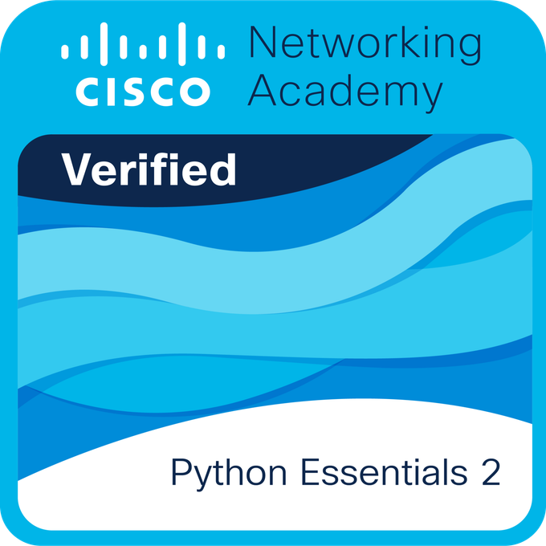

Mukiibi Moses
AI & Data Science Researcher • Computer Scientist
•
•
 ResearchGate
ResearchGate
AI & Data Science Researcher • Computer Scientist
•
•
 ResearchGate
ResearchGate
Mukiibi Moses is a computer engineering student at Kyungdong University specializing in artificial intelligence, machine learning, and data science. His work focuses on emotion-aware AI systems and optimization of generative models.He builds intelligent systems, engineer data pipelines, and apply modern AI techniques to solve real-world challenges. Passionate about innovation, performance optimization, and continuous learning.
CGPA: 4.27 / 4.5
Relevant Coursework: Algorithms, Machine Learning, Computer Security, Data Structures, Cryptography, Cybersecurity & Probability & Statistics
Majors: Physics, Economics, Mathematics & Computer Studies
Built an AI application capable of generating empathetic context-aware responses using sentiment analysis and intent recognition models. Implemented NLP pipelines for input understanding and emotional tone modeling.
Python • NLP • Transformer ModelsEngineered an analytics pipeline with AWS tools to process 50,000+ social media posts, extract insights, visualize trends, and generate dashboards for social trend interpretation.
AWS • Data Pipelines • VisualizationDeveloped a Gradio-powered interface for prompt-driven image generation using Stable Diffusion models and documented findings in a full research thesis, including model optimization techniques.
Stable Diffusion • Gradio • Research Documentation
AI Emotional Response Systems
Explored emotion embedding models and transformer NLP for context-aware response generation. Research involves
model performance evaluations, sentiment benchmarks, and optimization strategies.
Generative AI Optimization
Studied performance improvement and inference optimization for Stable Diffusion pipelines, including latency
reduction strategies and quality enhancement via fine-tuning parameters.
